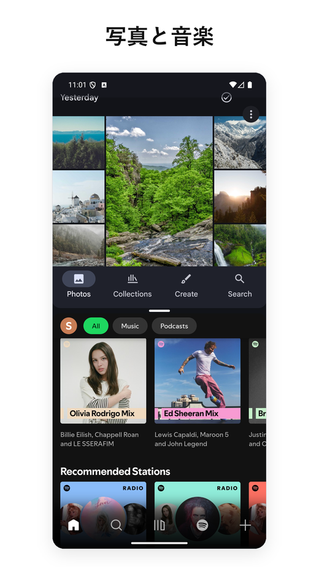
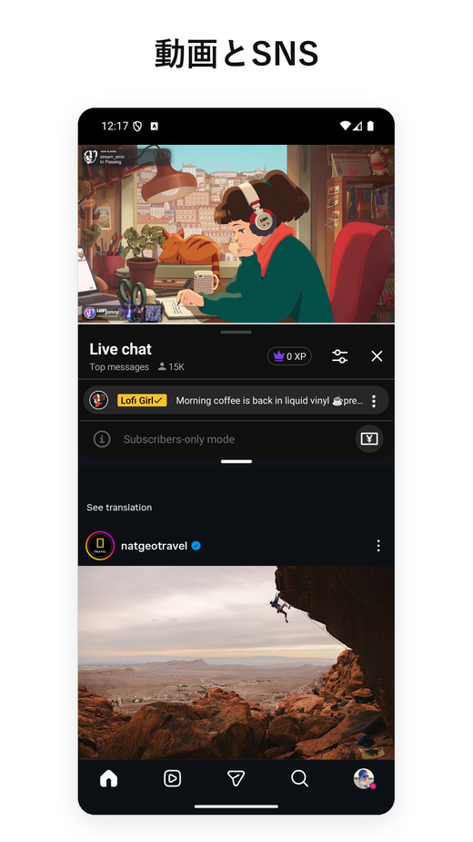
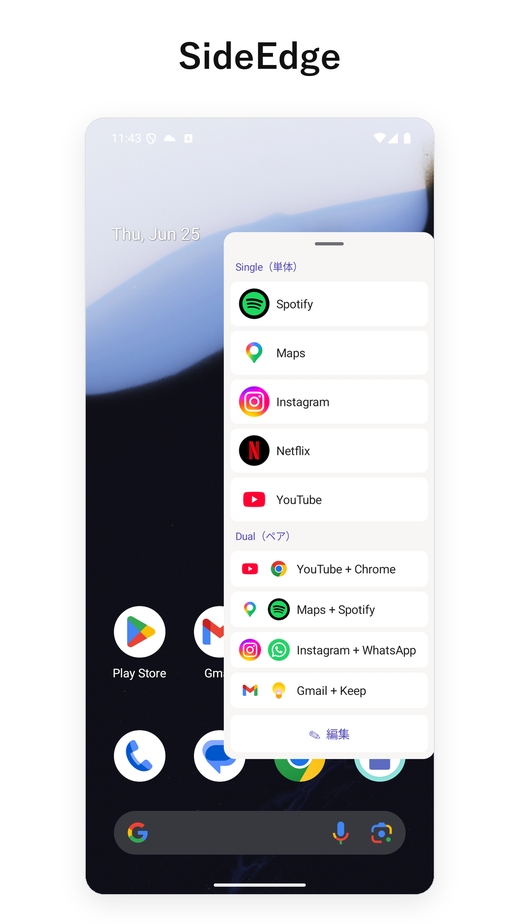
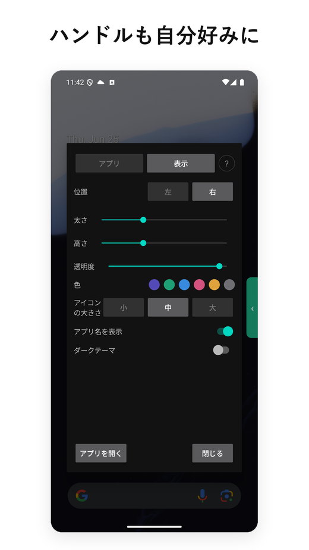

- Android 15 / 16 / 17 でも安定して動作する、数少ない分割画面ユーティリティの 1 つです。
- 多くの競合は Google が内部 API を変更したタイミングで壊れましたが、本アプリは近年のすべての OS 移行を通じてアップデートを続けています。
- 広告なし、インターネット接続不要。分割画面のコアは Android 12L 以降ではアクセシビリティサービス不要（任意機能の SideEdge だけが、ログイン/パスワード画面でハンドルを隠すために使用）。軽量で、バックグラウンドサービスもありません。
- 無料版でコア機能はカバー。Pro サブスクリプションは月額約 1 ドル — 近い有料競合の約 10 分の 1 です。
- スマホで OS 標準のアプリペアが使えるのは実質 Samsung だけです — Android 15 で機能は来ましたが、Pixel スマホ（通常モデル）には対応していません。
- Pixel ユーザーで Galaxy のアプリペアが恋しい方にとって、現時点で最も近い代替といえる存在です。
1. 背景：なぜ Android で「アプリペア」が重要なのか
Android は 7.0（Nougat、2016 年）以降、分割画面によるマルチタスキングをサポートしてきました。しかし 2 つのアプリの組み合わせを保存して一緒に起動する 機能は、OS レベルでは一度も提供されてきませんでした。Samsung は 2017 年に One UI に「アプリペア」として追加しており、Galaxy から Pixel に乗り換えたユーザーは、なぜその機能がないのだろう？と疑問に思うと思います。
回避策としては、2 段階の手順（アプリ A を開く、アプリ B を隣のウィンドウに開く）を自動化するサードパーティ製ランチャーを入れることになります。Google Play には同種のアプリが何十本も並んでいますが、見た目以上にカオスな状況です — Android のリリースごとに分割画面の呼び出し方が変わり、多くのアプリが更新されないまま取り残されているからです。
Android 15（2024 年）で初めて OS 標準のアプリペア機能が追加されました。ただし Google はこれを大画面端末限定にしたため、Pixel Tablet には来ましたが、Pixel 9 Pro には来ていません。2026 年中頃時点でスマホの状況を整理すると：
- Samsung Galaxy スマホ — 2017 年から（Edge Panel 経由）
- Pixel スマホ（タブレットや Fold を除く通常モデル）— なし
- Xiaomi、OnePlus、Oppo、Realme、Vivo、Motorola、Nokia、Sony、ASUS — なし
つまりスマホで OS 標準のアプリペアが使えるのは実質 Samsung だけ。それ以外のユーザーは手動で分割画面を組む（アプリを開く → 履歴ボタン長押し → 隣に配置 → 毎回繰り返し）か、サードパーティ製アプリを入れるかの 2 択になります。
Pixel・純正 Android 向けの Samsung アプリペア代替
Galaxy から Pixel へ — あるいは純正 Android のスマホへ乗り換えて、Samsung のアプリペアの代わりを探しているなら、まさにそのギャップを埋めるために Split Screen Launcher を作りました。Samsung 端末も Edge Panel も使わずに、ワンタップで「2 つのアプリを並べて起動する」のと同じ操作が手に入ります。
しかも、Android 15 / 16 / 17 でも動作し続ける数少ない分割画面アプリの 1 つでもあります — 広告なし、トラッキング SDK なし、分割画面のコアは Android 12L 以降ではアクセシビリティ権限も不要です（SideEdge を利用する時は除く）。古いアプリペアツールの多くは、近年の Android で塞がれたシステムのショートカットに依存しています。本アプリは、各 OS アップデートを通じて動かし続けてきた別の経路で画面分割します。
2. Split Screen Launcher で実際にできること
Split Screen Launcher は目的特化のユーティリティです。アプリを 2 つ選び、ペアに名前（「通勤」「仕事」「YouTube + Instagram」など）を付ければ、アプリ内にそのペアが一行として並びます。それをタップするだけで、2 つのアプリが並んで起動します。


これがすべての機能です。内蔵ブラウザも、フローティングウィジェットも、通知パネル統合もありません。アプリは軽量で（数メガバイト程度）、バックグラウンドで何かを走らせることもありません。
検証中に実際に使ったペアの例：
- Google マップ + Spotify — ドライブ中
- YouTube + Instagram — セカンドスクリーン
- Chrome + Google Keep — リサーチとメモ
- Gmail + Slack — 仕事の仕分け
- 電卓 + Chrome — 複数タブの価格比較
想定していなかった使い方が 1 つあります：車内です。あるユーザーは、車載の Android AI ボックスで Split Screen Launcher を動かし、ナビと音楽用に Maps + Spotify を、助手席の人のために Maps + Netflix をペアにして切り替えていると教えてくれました。ペアの起動はワンタップなので、履歴メニューから探して長押しするよりも、車のヘッドユニットにはるかに向いているというわけです。
アプリペアを自動で起動 — MacroDroid・Automate・Tasker
想定していなかった使い方は、まったく別のところからもう 1 つ届きました — バイクです。ハンドルにタブレットを取り付けて本アプリを使っているライダーが、MacroDroid の自動化で保存したペアをひとりでに立ち上げたい、と考えていました。エンジン始動をきっかけに、走行中はタップせずに分割を開くマクロです。この要望がそのまま機能になりました。バージョン 3.0.4 から、MacroDroid は Android 標準のショートカット選択を通して保存済みペアを起動でき、マクロは他の動作と同じ要領で分割を呼び出せます。Tasker や Automate といった他の自動化ツールは個別には検証していませんが、この機能はアプリ独自の仕組みではなく標準のショートカット選択に依存しているので、同じように動くはずです。Pro 機能で、できるのは保存済みペアの起動に限られます。自動化ツールを使わない人には無縁ですが、ハンズフリーで移動中に使う層には、「ワンタップ」と「ノータップ」の間の隙間を埋める機能です。
MacroDroid での設定手順
- マクロに アクションを追加 → アプリ → ショートカットを起動（Launch Shortcut）。
- 「ショートカットを選択」の一覧で Split Screen を選ぶ。
- 起動したい保存済みのペアを選ぶ。
- あとは好きなトリガーに紐づけるだけ — Bluetooth 機器の接続、充電の開始、時刻など。
これだけで完了です。設定したトリガーが作動すると、アプリペアが自動的に起動します。例えば「車のエンジンがかかったら、タイヤ空気圧センサーと通話アプリを起動」「Bluetooth に接続されたら、ナビと音楽アプリを起動」といった使い方ができます。


バックアップ・エクスポート
見落としやすいので明記しておきたいことが 1 つあります。ペアデータはバックアップファイルとしてエクスポート可能です。地味に聞こえますが、このカテゴリの競合の多くはペアをアプリ専用ストレージに保存するだけでエクスポートする手段がなく、機種変更するとペアを手作業で作り直す羽目になります。Pixel から Pixel への乗り換えで数秒で全セットを復元できるよう、バックアップ / 復元は初期段階から主要機能として組み込みました。
ホーム画面をクリーンに
それから、もう１つ最初に触れておきたい設計判断があります：デフォルトではペアはアプリ内で完結し、ホーム画面にアイコンは作られません。理由は半分はシンプルに（ホーム画面がペアのアイコンで散らからない）、半分は構造的なものです — アプリが特定のランチャー（Pixel Launcher、Nova など）に縛られない設計にしてあります。セクション 3 で触れるように、ショートカットに依存するランチャーこそが、Android 15 や 16 の移行で壊れやすい種類のアプリだからです。アプリ内完結にしておくことで、アプリの移行が容易になります。
ホーム画面にピン留めするオプション機能を使えば、Pro ユーザーはホーム画面から直接ワンタップでペアを起動できます。ホーム画面をシンプルに保つという元の姿勢を保ちながら、ホームアイコンから分割アプリを起動したいというニーズに応えようと考えました。ホームに表示されるアイコンは、2 つのアプリアイコンを上下に連ねたデザインで、通常のランチャーアイコンと視覚的に区別できるようにしてあります。
SideEdge — どの画面からでもペアを起動
バージョン 3.0 で SideEdge を追加しました。画面の端からスッと引き出すサイドバーで、保存したペアや単体アプリが一覧表示されます。ホーム画面に戻らなくても、どの画面からでも分割画面を起動したり、1 つのアプリへ切り替えたりできます。
Galaxy から乗り換えた方には、馴染みのある形だと思います。Samsung の Edge Panel（画面の横のタブから引き出すショートカットのトレイ）でアプリペアを起動していた方も多いはずです。SideEdge はその発想を、あらゆる Android スマホ・タブレットで使えるようにしたものです。Samsung製の完全な代替とはなりませんが、似たような体験が得られます。Pixel や純正 Android で Edge Panel の代わりを探していたなら、まさにこの機能がその選択肢になるはずです。


SideEdge は、そのままだとログインやパスワードの入力画面に重なってしまう可能性があります。その場合、キーの入力ができなくなってしまいます。そこで、SideEdge は、アクセシビリティサービスを用いて、セキュリティ画面を認識し、ハンドルを退避させて、入力不能の回避動作を行います。画面の内容を読み取ったり、収集・送信したりすることは一切ありません。詳しくは下の権限とプライバシーをご覧ください。
このアプリが合う人（そうでない人）
技術的な話に入る前に、この先を読む価値があるかどうか、簡単な適合チェックを用意しました。
こういう方に向いています
- 同じ 2 つのアプリをいつも組み合わせて使う（マップ + 音楽、メール + チャットなど）
- Pixel または純正 Android を使っていて、Samsung のアプリペアが恋しい
- 広告やトラッキング SDK のないアプリを好む
- Android 12L 以降を使用している（分割のコアはアクセシビリティ権限不要。SideEdge のみ使用）
- OS のメジャーアップデートを越えて動き続けるものを探している
こういう方には向きません
- そもそも分割画面をほとんど使わない
- フローティングウィジェット、ジェスチャー起動、あるいは（保存したペアの起動を超える）高度な自動化が欲しい
- Samsung 端末を使っている — One UI 内蔵のアプリペアで十分優秀
- メーカー独自カスタマイズが強い Android（MIUI/HyperOS、OxygenOS、ColorOS、MagicOS、EMUI/HarmonyOS など）を使っている — メーカーが分割画面まわりを独自に書き換えているため、動作するかは端末次第
まだ興味がありますか？ この先では技術的な背景を扱います — なぜ Android 15 / 16 が多くの代替アプリを壊したのか、そして本アプリのアプローチの裏にある設計判断について。
3. Android 15 / 16 問題 — なぜ多くの競合が壊れたのか
ここが一番面白い部分であり、多くの競合アプリが動かなくなった理由でもあります。
歴史的に、分割画面ランチャーは Google が少しずつ制限・廃止してきた OS レベルの API に依存してきました。Android のメジャーリリースのたびに、サードパーティが 2 つのアプリを並べて起動するための手段が少しずつ削られてきました。特に Android 15 と 16 では、最も一般的な経路がほぼ塞がれました。シェルレベルの回避策も同じように失敗します。
平たく言うと： サードパーティアプリが端末を分割モードに切り替えるために使っていた「裏技」が、Android 15 / 16 ではもう効きません。このカテゴリのほとんどのアプリは対応版をリリースしていません。
Split Screen Launcher は別の経路で、Android 15 / 16、そして新しい Android 17 でも確実に分割画面に到達します。正確な仕組みについては伏せさせていただきます — OS バージョンを跨いで動作する組み合わせを見つけるにはかなりの試行錯誤が必要で、レシピを公開すれば壊れた競合すべてに手渡すことになってしまうからです。言えるのは、リリース履歴が Android 12、12L、14、15、16、17 の移行を通じて継続的にメンテされていることを示しており、そのペースを今後も維持していくつもりだということです。
(回避策) Android の「設定 → システム → 開発者向けオプション」で「アクティビティをサイズ変更可能にする」と「サイズ変更不可のアプリをマルチウインドウで利用可能にする」を両方オンにすれば、これらのアプリも分割画面で使えるようになります。アプリ内ヘルプの「"動作しない可能性"のアプリを使うには」に手順を載せてあります。
(更新) 最近のバージョンでは、これまでペアになりづらかったいくつかのアプリ — その中には Alexa や Google Calendar も含まれます — にも対応し、分割画面で正しく開くようになりました。
4. 権限とプライバシー
Android 12L 以降 では、ペアの起動にランタイム権限もアクセシビリティサービスも必要ありません — 分割画面のコア処理は Android 標準の仕組みだけで完結します。追加の許可が要るのは、自分でオンにする次の 2 つの任意機能だけです。
① ペアごとの自動回転（任意の権限） — ある特定のペアでこれをオンにすると、その時点で初めて、アプリが標準のシステムダイアログを通じて 「システム設定の変更」権限をリクエストします。前もって要求されることはなく、この機能を使わない限り表示されることもありません。
② SideEdge の有効化（任意の機能） — サイドバーをオンにすると、2 つの許可を使います。1 つは、パネルを他のアプリの上に重ねて表示するための 「他のアプリの上に重ねて表示」権限。もう 1 つは アクセシビリティサービスで、こちらは限定的かつ防御的な目的のためだけに使います — ログインやパスワード入力・2 段階認証・銀行アプリなど、セキュリティ上重要な画面が表示されたことを検知して、その画面ではハンドルやパネルを自動的に退避させ、大切な入力に重ならないようにします。画面の内容を読み取ったり、収集・送信したりすることは一切ありません。どちらの許可も、システムのダイアログで明示的に許可しない限り有効になりません。
Android 9 〜 12 では、アクセシビリティサービス権限が必要です。これ以外に利用可能な API がないためです。Play Store の掲載ページには、このサービスが分割画面の起動にのみ使われることを明示しています。Google Play に表示される権限一覧は、1 画面で全部読めるくらい短いものです — 位置情報なし、連絡先なし、ストレージなし、そして（特筆すべきことに）ネットワークなし。Google Play の同種アプリの中では異例の少なさです。
平たく言うと： 古い Android では分割画面を起動する公式 API が存在しなかったため、アクセシビリティサービスが唯一の実用的な経路でした。これはレガシーな制約であって、画面を読み取るために使っているわけではありません。
比較として、Play Store 上の無料分割画面アプリの多くは広告 SDK（AdMob、Unity、IronSource）をバンドルしており、結果として INTERNET 権限とそれに付随するトラッカー一式を同梱することになります。私たちは代わりに最小限のサブスクリプションで収益化する道を選びました — 一つには権限フットプリントを清潔に保つため、もう一つにはこれほど小さなユーティリティに広告 SDK を入れればサイズが大きく膨らんでしまうからです。
5. 他の分割画面アプリとの比較
比較そのものの前に、大まかな地図を描いておきます。「アプリペア」的な機能には、いくつかのアプローチがあります：
- OEM 独自の実装 — Samsung のアプリペア（2017 年の One UI 以降）。Xiaomi や OPPO、旧 LG にも類似の機能があります。これらはそれぞれのメーカーの端末でしか動きません。
- サードパーティのユーティリティ — この用途に特化した単機能アプリ。多くが近年の Android で縮小・廃止された OS レベル API に依存しているため、この分野のアプリはかなり減りました。
- 自動化ベースのアプローチ — Tasker などのツールで分割起動をスクリプト化できますが、専用アプリと同じ仕組みに依存しているため、結局同じ場面で同じように動かなくなります。さらに、ペアごとに手作業で作り込む必要があります。バージョン 3.0.4 では、こうしたツールと連携する簡単な方法を用意しました。分割を自分で組まなくても、MacroDroid から保存済みペアを起動できます（Pro）。標準のショートカット選択を経由するので、Tasker や Automate といった他の自動化アプリでも同じように使えるはずですが、そちらは個別には検証していません。
サードパーティの市場自体はかなり断片化しています。Google Play には専用の分割画面ユーティリティが数十本並んでいますが、アクティブさと品質のばらつきが大きい状態です。
この分野で最もダウンロードされているアプリ群は数百万インストールを積み上げていますが、上位勢は意外なほど弱点を抱えています。最大手の 1 本は、その大きなリーチに対してレビュー評価が平凡で、別の広く使われている代替も 2025 年中頃以降アップデートが止まっており、Android 15 / 16 で変わった分割画面 API への対応がいまだに入っていません。値付けの強気なものもあり、高額な週額サブスクリプションがユーザーコミュニティで批判を集めています。
この分野全体の傾向としては、Android 11〜12 あたりでアップデートが止まったもの、目立つバナー広告や全画面広告を出すもの、すべての Android バージョンで Accessibility 権限を要求するもの、のいずれかに当てはまるアプリが大半です（本アプリは Android 12L 以降でこの要件を外しています）。結果として、しっかりメンテされていて権限要求が最小、という選択肢は意外なほど薄い分野になっています。
小規模で継続的にメンテされていて広告も入れていないアプリは、この市場では本来かなり目立ちやすいはずです。あとはユーザーに見つけてもらえるかどうか、というところ。
6. 価格
無料版では保存できるペア数に上限を設けており、ユーザーは自分の習慣に合うかどうかを判断する前に一連のワークフローを試せます。ペアの作成、起動、バックアップ / 復元といったコア機能は、課金なしでも使えます。
Pro サブスクリプションは地域により 月額約 1 ドル。ペア数上限を解除し、フォルダ整理とアイコン色のカスタマイズが追加されます。通常の Google Play サブスクなので、いつでもキャンセル可能です。
比較のために：同じカテゴリの他の有料分割画面ユーティリティでは、買い切り数ドルから高額な週額サブスクまで価格帯が広がっています。月 1 ドルというのは、近い有料競合のおよそ 1 桁安い水準です。
7. まとめ — どんな人向けか
このアプリは誰のためのもの？ 率直な見解
全員向けのアプリだとは思っていません。2 つのアプリを決まった組み合わせで使う習慣（マップ + 音楽、メール + チャットなど）がなければ、そもそもあまり開かないでしょう。でも、純正 Android を使っていて、Pixel に移ってから Galaxy のアプリペアが恋しいと感じているのであれば、このアプリはあなたのために作りました — そして、その挙動を取り戻すための最も妥協の少ない方法を目指しました。広告を入れない方針と月 1 ドルという価格設定は意図的な選択であり、このカテゴリにおいて正しい答えだと考えています。
メリット
- Android 15 / 16 / 17 で実際に動作する
- どのプランでも広告なし
- 軽量、バックグラウンドサービスなし
- 分割のコアは Android 12L 以降アクセシビリティ権限不要（SideEdge のみ使用）
- ネットワーク権限をまったく宣言していない
- Pro プランは月約 1 ドルで、競合の 10 分の 1
- 機種移行のためのバックアップ / 復元
- ペアごとの画面回転をオプションで設定可能（例：動画用ペアを横向きに固定）
- 15 言語のローカライズ
デメリット
- タップから分割画面表示までに体感で約 1 秒の遅延があります。これはほぼ OS 側のコストです — Android 12L+ で分割モードに入るには、システム内部で複数のタスク遷移が順番に処理されるため、このカテゴリのアプリはどれも 0.8〜1.2 秒の範囲に収まります。バグではありませんが、あらかじめご承知おきください
- フローティングウィジェットやジェスチャー連携はありません。自動化アプリからの起動（MacroDroid）には対応していますが、Pro 限定で、できるのは保存済みペアの起動のみです。ホーム画面ショートカットも任意で利用可能（Pro 機能）です — それ以外はアプリ内で完結する設計のままです
- ペア作成画面ではインストール済みアプリがカテゴリ分けなしで全表示されるため、端末に 60 以上のアプリが入ってくると少し面倒になります
- 個人開発者のため、Pixel 以外の ROM でエッジケースを踏んだ場合、即日修正は期待しないでください